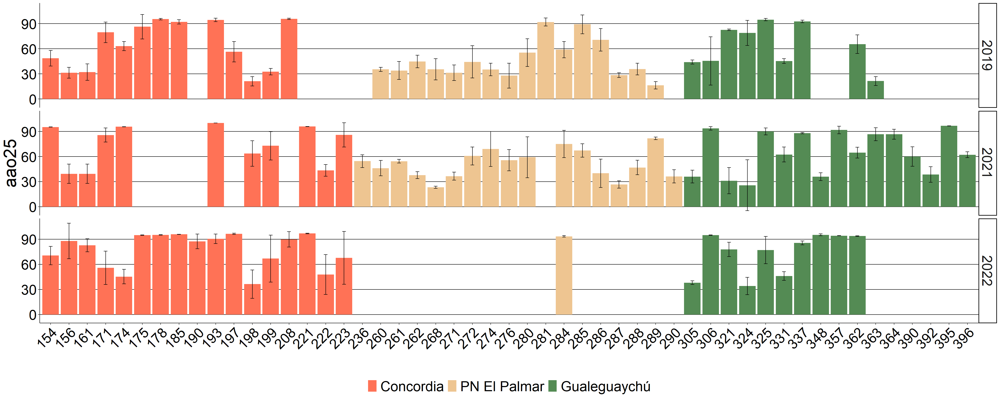
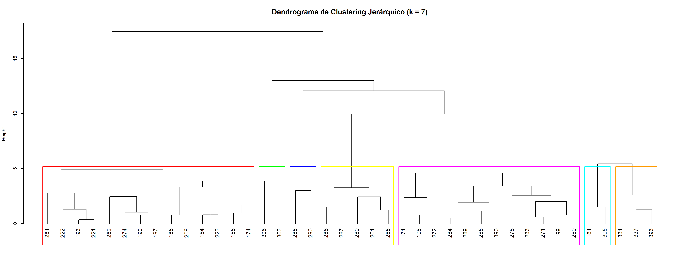

Variables frutos
Análisis univariado
Componentes de varianza
A continuación se muestran los intervalos de correlación intraclase (ICC) o repetibilidad expresada en proporción de la varianza total explicada por cada nivel de agrupamiento (Año, Población, Individuo) para caracteres físicos de frutos de individuos de Hexachlamys edulis muestreados en Entre Ríos, Argentina en noviembre de los años 2019, 2021 y 2022.
Los asteriscos indican diferencias estadísticas significativas (* < 0,05; ** < 0,01; *** < 0,001).
## # A tibble: 124 × 4
## year site phenotype n_frutos
## <chr> <chr> <chr> <int>
## 1 2019 Concordia 154 12
## 2 2019 Concordia 156 12
## 3 2019 Concordia 161 12
## 4 2019 Concordia 171 12
## 5 2019 Concordia 174 12
## 6 2019 Concordia 175 6
## 7 2019 Concordia 178 11
## 8 2019 Concordia 185 12
## 9 2019 Concordia 190 12
## 10 2019 Concordia 193 12
## # ℹ 114 more rows## # A tibble: 112 × 4
## year site phenotype n_frutos
## <chr> <chr> <chr> <int>
## 1 2019 Concordia 154 4
## 2 2019 Concordia 156 4
## 3 2019 Concordia 161 4
## 4 2019 Concordia 171 4
## 5 2019 Concordia 174 4
## 6 2019 Concordia 175 4
## 7 2019 Concordia 178 4
## 8 2019 Concordia 185 4
## 9 2019 Concordia 193 4
## 10 2019 Concordia 197 4
## # ℹ 102 more rows## [1] 52## # A tibble: 1 × 28
## aao_mean aao_CV fen_mean fen_CV cloa_mean cloa_CV clob_mean clob_CV caro_mean caro_CV
## <dbl> <dbl> <dbl> <dbl> <dbl> <dbl> <dbl> <dbl> <dbl> <dbl>
## 1 82.8 15.6 762. 97.4 7.29 111. 12.4 111. 12.8 37.5
## # ℹ 18 more variables: indmad_mean <dbl>, indmad_CV <dbl>, att_mean <dbl>, att_CV <dbl>,
## # ratio_mean <dbl>, ratio_CV <dbl>, brix_mean <dbl>, brix_CV <dbl>, aao25_mean <dbl>,
## # aao25_CV <dbl>, aao50_mean <dbl>, aao50_CV <dbl>, aao100_mean <dbl>, aao100_CV <dbl>,
## # aao250_mean <dbl>, aao250_CV <dbl>, CTC_CL_mean <dbl>, CTC_CL_CV <dbl>## # A tibble: 1 × 6
## color_L_mean color_L_CV color_a_mean color_a_CV color_b_mean color_b_CV
## <dbl> <dbl> <dbl> <dbl> <dbl> <dbl>
## 1 54.0 15.9 2.78 380. 40.7 30.9## # A tibble: 1 × 22
## pff_mean pff_CV de_mean de_CV dp_mean dp_CV pen_mean pen_CV PSF_mean PSF_CV ns_mean ns_CV
## <dbl> <dbl> <dbl> <dbl> <dbl> <dbl> <dbl> <dbl> <dbl> <dbl> <dbl> <dbl>
## 1 9.76 65.8 26.9 27.9 26.8 26.4 6.78 74.7 1.80 68.5 1.35 52.1
## # ℹ 10 more variables: PSS_mean <dbl>, PSS_CV <dbl>, dan_mean <dbl>, dan_CV <dbl>,
## # pff_todos_mean <dbl>, pff_todos_CV <dbl>, PSS_PSF_mean <dbl>, PSS_PSF_CV <dbl>,
## # dedp_mean <dbl>, dedp_CV <dbl>PFF
 Resumen
Resumen
## [1] "Datosff:"## variable min max
## PSFL PSFL 1.12 24.10000000
## max_polen2 max_polen2 10.50 34.50000000
## min_polen2 min_polen2 9.00 33.00000000
## DMAP DMAP 15.00 51.00000000
## DMIP DMIP 13.00 49.00000000
## mean_polen mean_polen 15.75 50.62500000
## NO NO 0.00 12.00000000
## NS NS 1.00 5.00000000
## NS_NO NS_NO 0.00 1.66666667## [1] "Datosramas:"## variable min max
## length length 1.000 30.0000000
## node node 1.000 13.0000000
## NFL NFL 0.000 51.0000000
## NFR NFR 0.000 6.0000000
## FR FR 0.000 1.0000000
## PSF PSF 0.071 5.2300000
## NH NH 0.000 43.0000000
## PSH PSH 0.015 3.4030000
## NFR_NFL NFR_NFL 0.000 1.0000000
## NFL_cm NFL_cm 0.002 7.5020000
## NFL/node NFL/node 0.000 13.0000000
## NFR/cm NFR/cm 0.000 1.0000000
## NFR/Nudo NFR/Nudo 0.000 2.0000000
## NH/NFR NH/NFR 0.000 28.0000000
## PSH/NFR PSH/NFR 0.000 2.2370000
## PSH/PSFR PSH/PSFR 0.000 31.5070423## [1] "Frutos_fisico:"## variable min max
## pff pff 0.10500000 45.500000000
## de de 5.25000000 48.630000000
## dp dp 5.78000000 60.930000000
## pen pen 0.10000000 13.000000000
## PSF PSF 0.03800000 7.790000000
## ns ns 1.00000000 5.000000000
## PSS PSS 0.00000000 6.480000000
## dan dan 1.00000000 5.000000000
## pff_todos pff_todos 1.00000000 235.000000000
## PSS_PSF PSS_PSF 0.00000000 0.996441281
## dedp dedp 0.53070523 1.487787858## [1] "Frutos_color:"## variable min max
## rep rep 1.0000000 12.000000
## id id 1.0000000 996.000000
## color_L color_L 4.4200000 75.700000
## color_a color_a 0.0001000 53.100100
## color_b color_b -0.9400000 77.560000
## color_G color_G 19.6020318 102.085613
## axis_1 axis_1 -5.3800000 6.120000
## axis_2 axis_2 -5.0500000 2.870000
## axis_3 axis_3 -5.4100000 2.700000
## axis_4 axis_4 -2.5100000 3.410000## [1] "Frutos_quimico:"## variable min max
## aao aao 40.117500000 99.9957714
## fen fen 109.710000000 4891.1254791
## cloa cloa 0.059361914 53.5633496
## clob clob 0.100000000 91.2426485
## caro caro 4.233126029 28.8627069
## indmad indmad 0.000000000 1.0000000
## att att 0.149333333 6.8000000
## ratio ratio 1.390000000 40.1785714
## brix brix 3.033333333 13.9000000
## aao25 aao25 2.054794521 99.9958178
## aao50 aao50 20.330000000 99.9957249
## aao100 aao100 28.100000000 99.9957249
## aao250 aao250 45.548489666 99.9960967
## CTC_CL CTC_CL 0.156873942 63.7768924Peso Fresco del Fruto
## Component r
## 1 Year 0.309006748
## 2 Site 1.605946310
## 3 Phenotype 19.367950258
## 4 Residual 78.717096683
## p_value
## 1 0.113034565942156786655381495165784144774079322814941406250000000000000
## 2 0.113607107270969759360568218653497751802206039428710937500000000000000
## 3 0.000000000000000000000000000000000000000000000000000000000000256814656
## 4 NADPF
 Resumen
Resumen
## Bootstrap Progress:
## Permutation Progress for year :
## Permutation Progress for site :
## Permutation Progress for phenotype :##
##
## Repeatability estimation using the lmm method
##
## Repeatability for year
## R = 0.009
## SE = 0.004
## CI = [0.001, 0.008]
## P = 0.000358 [LRT]
## 0.667 [Permutation]
##
## Repeatability for site
## R = 0.096
## SE = 0.138
## CI = [0.005, 0.266]
## P = 0.0265 [LRT]
## 0.667 [Permutation]
##
## Repeatability for phenotype
## R = 0.435
## SE = 0.071
## CI = [0.383, 0.514]
## P = 0.00000000000000000000000000000000000000000000000000000000000000000000000000000000000000000000142 [LRT]
## 0.667 [Permutation]
##
## Repeatability for Residual
## R = 0.46
## SE = 0.129
## CI = [0.338, 0.566]
## P = NA [LRT]
## NA [Permutation]DMAF
Resumen
## Bootstrap Progress:
## Permutation Progress for year :
## Permutation Progress for site :
## Permutation Progress for phenotype :##
##
## Repeatability estimation using the lmm method
##
## Repeatability for year
## R = 0.006
## SE = 0.005
## CI = [0.001, 0.01]
## P = 0.0701 [LRT]
## 0.667 [Permutation]
##
## Repeatability for site
## R = 0.077
## SE = 0.029
## CI = [0.002, 0.052]
## P = 0.0143 [LRT]
## 1 [Permutation]
##
## Repeatability for phenotype
## R = 0.267
## SE = 0.055
## CI = [0.231, 0.323]
## P = 0.0000000000000000000000000000000000000000000000000000000193 [LRT]
## 0.667 [Permutation]
##
## Repeatability for Residual
## R = 0.651
## SE = 0.024
## CI = [0.673, 0.712]
## P = NA [LRT]
## NA [Permutation]DMAF_DPF
Resumen
## Bootstrap Progress:
## Permutation Progress for year :
## Permutation Progress for site :
## Permutation Progress for phenotype :##
##
## Repeatability estimation using the lmm method
##
## Repeatability for year
## R = 0.045
## SE = 0.106
## CI = [0.01, 0.192]
## P = 0.0000000000396 [LRT]
## 0.667 [Permutation]
##
## Repeatability for site
## R = 0.01
## SE = 0
## CI = [0, 0]
## P = 0.368 [LRT]
## 1 [Permutation]
##
## Repeatability for phenotype
## R = 0.432
## SE = 0.062
## CI = [0.331, 0.437]
## P = 0.00000000000000000000000000000000000000000000000000000000000000000000000000000000000000000000014 [LRT]
## 0.667 [Permutation]
##
## Repeatability for Residual
## R = 0.512
## SE = 0.046
## CI = [0.476, 0.562]
## P = NA [LRT]
## NA [Permutation]*L
 Resumen
Resumen
## Bootstrap Progress:
## Permutation Progress for year :
## Permutation Progress for site :
## Permutation Progress for phenotype :##
##
## Repeatability estimation using the lmm method
##
## Repeatability for year
## R = 0.006
## SE = 0.003
## CI = [0, 0.006]
## P = 0.0399 [LRT]
## 0.667 [Permutation]
##
## Repeatability for site
## R = 0.187
## SE = 0.072
## CI = [0.193, 0.324]
## P = 0.00000548 [LRT]
## 0.667 [Permutation]
##
## Repeatability for phenotype
## R = 0.169
## SE = 0.029
## CI = [0.126, 0.179]
## P = 0.00000000000000000000000000000000000000000000000000000063 [LRT]
## 0.667 [Permutation]
##
## Repeatability for Residual
## R = 0.638
## SE = 0.044
## CI = [0.546, 0.627]
## P = NA [LRT]
## NA [Permutation]*a
 Resumen
Resumen
## Component r
## 1 Year 1.55375164
## 2 Site 2.22250773
## 3 Phenotype 12.99557016
## 4 Residual 83.22817047
## p_value
## 1 0.0000000000000000000000000000000180033124544258060061724391331949846062343567609786987304687500000000
## 2 0.0050117072516728299394483947537537460448220372200012207031250000000000000000000000000000000000000000
## 3 0.0000000000000000000000000000000000000000000000000000000000000000000000000000000000000000000211199703
## 4 NA*b
 Resumen
Resumen
## Bootstrap Progress:
## Permutation Progress for year :
## Permutation Progress for site :
## Permutation Progress for phenotype :##
##
## Repeatability estimation using the lmm method
##
## Repeatability for year
## R = 0.001
## SE = 0.003
## CI = [0, 0.006]
## P = 0.348 [LRT]
## 0.667 [Permutation]
##
## Repeatability for site
## R = 0.147
## SE = 0.024
## CI = [0.001, 0.047]
## P = 0.000184 [LRT]
## 0.667 [Permutation]
##
## Repeatability for phenotype
## R = 0.213
## SE = 0.026
## CI = [0.207, 0.255]
## P = 0.0000000000000000000000000000000000000000000000000000000000000000000000125 [LRT]
## 0.667 [Permutation]
##
## Repeatability for Residual
## R = 0.639
## SE = 0.019
## CI = [0.722, 0.759]
## P = NA [LRT]
## NA [Permutation]IM

## Component r
## 1 Year 0.425450641
## 2 Site 1.411226564
## 3 Phenotype 1.581683759
## 4 Residual 96.581639036
## p_value
## 1 0.00000000000000000020095883194197446243531995913045307133870664983987808
## 2 0.00000185546932778184155759734763613266750326147302985191345214843750000
## 3 0.00000000000000000000000000000000000000000000000000000000000000140980604
## 4 NAPEN
Resumen
## Bootstrap Progress:
## Permutation Progress for year :
## Permutation Progress for site :
## Permutation Progress for phenotype :##
##
## Repeatability estimation using the lmm method
##
## Repeatability for year
## R = 0.077
## SE = 0.066
## CI = [0.009, 0.133]
## P = 0.00000000000000196 [LRT]
## 0.667 [Permutation]
##
## Repeatability for site
## R = 0.257
## SE = 0.304
## CI = [0.012, 0.586]
## P = 0.0000000449 [LRT]
## 0.667 [Permutation]
##
## Repeatability for phenotype
## R = 0.147
## SE = 0.038
## CI = [0.075, 0.147]
## P = 0.000000000000000000000000000000000000000000000285 [LRT]
## 0.667 [Permutation]
##
## Repeatability for Residual
## R = 0.519
## SE = 0.217
## CI = [0.328, 0.739]
## P = NA [LRT]
## NA [Permutation]CLa
Resumen
## Component r p_value
## 1 Year 7.87310779 0.00000000000000009047154886875648743642386318
## 2 Site 17.25068173 0.00001456121396094800208177028055800406036724
## 3 Phenotype 24.44697303 0.00000000000000000000000000000000000630239772
## 4 Residual 50.42923745 NACLb
Resumen
## Component r p_value
## 1 Year 7.96033339 0.0000000000000000860057838713296531844149095
## 2 Site 17.21679732 0.0000146659410795003577058018273682193921559
## 3 Phenotype 24.37576001 0.0000000000000000000000000000000000144816973
## 4 Residual 50.44710929 NACTC
Resumen
## Component r p_value
## 1 Year 3.020714634390183839230 0.00000000002474756684918575815436761478061100661
## 2 Site 0.000000000000428853819 0.49958896481991510452047577928169630467891693115
## 3 Phenotype 24.931050849420913095855 0.00000000000000000000000000000000000000204205761
## 4 Residual 72.048234516188472298381 NAATT
Resumen
## Bootstrap Progress:
## Permutation Progress for year :
## Permutation Progress for site :
## Permutation Progress for phenotype :##
##
## Repeatability estimation using the lmm method
##
## Repeatability for year
## R = 0.357
## SE = 0.236
## CI = [0.006, 0.437]
## P = 0.00000000000000805 [LRT]
## 0.667 [Permutation]
##
## Repeatability for site
## R = 0.086
## SE = 0.029
## CI = [0.002, 0.056]
## P = 0.0183 [LRT]
## 0.667 [Permutation]
##
## Repeatability for phenotype
## R = 0.153
## SE = 0.133
## CI = [0.108, 0.352]
## P = 0.000105 [LRT]
## 0.667 [Permutation]
##
## Repeatability for Residual
## R = 0.404
## SE = 0.106
## CI = [0.421, 0.603]
## P = NA [LRT]
## NA [Permutation]SS
Resumen
## Bootstrap Progress:
## Permutation Progress for year :
## Permutation Progress for site :
## Permutation Progress for phenotype :##
##
## Repeatability estimation using the lmm method
##
## Repeatability for year
## R = 0.07
## SE = 0.039
## CI = [0.001, 0.074]
## P = 0.000575 [LRT]
## 0.667 [Permutation]
##
## Repeatability for site
## R = 0.091
## SE = 0.039
## CI = [0.004, 0.077]
## P = 0.0514 [LRT]
## 0.667 [Permutation]
##
## Repeatability for phenotype
## R = 0.327
## SE = 0.051
## CI = [0.288, 0.38]
## P = 0.00000000000515 [LRT]
## 0.667 [Permutation]
##
## Repeatability for Residual
## R = 0.512
## SE = 0.127
## CI = [0.469, 0.707]
## P = NA [LRT]
## NA [Permutation]SS/ATT
 Resumen
## Bootstrap Progress:
## Permutation Progress for year :
## Permutation Progress for site :
## Permutation Progress for phenotype :##
##
## Repeatability estimation using the lmm method
##
## Repeatability for year
## R = 0.356
## SE = 0.125
## CI = [0.23, 0.454]
## P = 0.00000000000000000427 [LRT]
## 0.667 [Permutation]
##
## Repeatability for site
## R = 0.182
## SE = 0.132
## CI = [0.004, 0.251]
## P = 0.000415 [LRT]
## 0.667 [Permutation]
##
## Repeatability for phenotype
## R = 0.177
## SE = 0.151
## CI = [0.108, 0.382]
## P = 0.00000112 [LRT]
## 0.667 [Permutation]
##
## Repeatability for Residual
## R = 0.285
## SE = 0.079
## CI = [0.233, 0.382]
## P = NA [LRT]
## NA [Permutation]## Component r p_value
## 1 Year 12.9843974 0.000000000000000000000000912340051
## 2 Site 4.4448840 0.044784644650487190342680321464286
## 3 Phenotype 29.9973905 0.000000000000000000330353296598029
## 4 Residual 52.5733281 NADPPH
 Resumen
Resumen
## Component r p_value
## 1 Year 0.0189130830 0.0000000063003784011922079914477801132477452484
## 2 Site 0.0295948342 0.0111273237321096712254542282494185201358050108
## 3 Phenotype 0.1189193628 0.0000000000000000000000000000000000000671384871
## 4 Residual 99.8325727200 NA## Component r p_value
## 1 Year 0.291177418 0.000003094484333379866749375031176327865978
## 2 Site 0.547489737 0.010297108235678474261187709259957046015188
## 3 Phenotype 2.153247871 0.000000000000000000000000000000000472883184
## 4 Residual 97.008084974 NA## Component r p_value
## 1 Year 0.00835655972 0.0000000989948673130157991932
## 2 Site 0.00636299496 0.0547351940537780037865367433
## 3 Phenotype 0.03676631087 0.0000000000000000000215342632
## 4 Residual 99.94851413446 NAPT
Resumen
## Bootstrap Progress:
## Permutation Progress for year :
## Permutation Progress for site :
## Permutation Progress for phenotype :##
##
## Repeatability estimation using the lmm method
##
## Repeatability for year
## R = 0.043
## SE = 0.044
## CI = [0.004, 0.088]
## P = 0.0000374 [LRT]
## 0.667 [Permutation]
##
## Repeatability for site
## R = 0.141
## SE = 0.122
## CI = [0.135, 0.367]
## P = 0.00828 [LRT]
## 0.667 [Permutation]
##
## Repeatability for phenotype
## R = 0.416
## SE = 0.049
## CI = [0.303, 0.391]
## P = 0.00000000000000000000000000000000000000903 [LRT]
## 0.667 [Permutation]
##
## Repeatability for Residual
## R = 0.4
## SE = 0.084
## CI = [0.312, 0.455]
## P = NA [LRT]
## NA [Permutation]## Component r p_value
## 1 Year 1.77849668 0.000377893750573377290146587226260521674703340977430343627929687500000
## 2 Site 4.84544332 0.023072231811067746287680080286008887924253940582275390625000000000000
## 3 Phenotype 34.02852761 0.000000000000000000000000000000000000000000000000000000000000993533626
## 4 Residual 59.34753239 NACTC/CL
Resumen
## Component r p_value
## 1 Year 4.32330808 0.000000349885641371861686572085348156946338349371217
## 2 Site 26.07131861 0.000000811448895443692261135459897758437364245764911
## 3 Phenotype 27.53440526 0.000000000000000000000000000000000000000000269081902
## 4 Residual 42.07096805 NA## [1] 0.0239908372## Error in eval(expr, envir, enclos): objeto 'beta_CTC_CL' no encontrado## [1] "phenotype - 154 : 0.0257070511455268"
## [1] "phenotype - 156 : 0.0246619822493879"
## [1] "phenotype - 161 : 0.0270033651233839"
## [1] "phenotype - 171 : 0.0253468088823723"
## [1] "phenotype - 174 : 0.0267495492028063"
## [1] "phenotype - 175 : 0.0229701872275788"
## [1] "phenotype - 178 : 0.0214162479467985"
## [1] "phenotype - 185 : 0.0213091533822434"
## [1] "phenotype - 190 : 0.0248245167039836"
## [1] "phenotype - 193 : 0.0230734658809093"
## [1] "phenotype - 197 : 0.0215323536625935"
## [1] "phenotype - 198 : 0.0248076802291526"
## [1] "phenotype - 199 : 0.0247415945825775"
## [1] "phenotype - 208 : 0.0201789747681065"
## [1] "phenotype - 221 : 0.0264892777430173"
## [1] "phenotype - 222 : 0.0229173334674619"
## [1] "phenotype - 223 : 0.0236251482553188"
## [1] "phenotype - 236 : 0.0261606578196302"
## [1] "phenotype - 260 : 0.0250466034419359"
## [1] "phenotype - 261 : 0.0250746117322539"
## [1] "phenotype - 262 : 0.0234605050995398"
## [1] "phenotype - 268 : 0.0248372378261099"
## [1] "phenotype - 271 : 0.0224270904891777"
## [1] "phenotype - 272 : 0.0245047374235601"
## [1] "phenotype - 274 : 0.024622126077779"
## [1] "phenotype - 276 : 0.0279928809730702"
## [1] "phenotype - 280 : 0.022752339931302"
## [1] "phenotype - 281 : 0.0242731895822828"
## [1] "phenotype - 284 : 0.0260252931379948"
## [1] "phenotype - 285 : 0.0258812299599866"
## [1] "phenotype - 286 : 0.0228345629141375"
## [1] "phenotype - 287 : 0.0259215827753071"
## [1] "phenotype - 288 : 0.0244163580016405"
## [1] "phenotype - 289 : 0.0239567691540539"
## [1] "phenotype - 290 : 0.0194946009016157"
## [1] "phenotype - 305 : 0.0277653128069998"
## [1] "phenotype - 306 : 0.024993516424949"
## [1] "phenotype - 321 : 0.0241505281216761"
## [1] "phenotype - 324 : 0.0231000659632131"
## [1] "phenotype - 325 : 0.0187400586380071"
## [1] "phenotype - 331 : 0.0231596881212546"
## [1] "phenotype - 337 : 0.0234524339062419"
## [1] "phenotype - 348 : 0.0265202652718998"
## [1] "phenotype - 357 : 0.0207574829967776"
## [1] "phenotype - 359 : 0.0219852255968939"
## [1] "phenotype - 362 : 0.0219058206398017"
## [1] "phenotype - 363 : 0.0248939375781632"
## [1] "phenotype - 364 : 0.0216899446294524"
## [1] "phenotype - 390 : 0.0265141867530847"
## [1] "phenotype - 392 : 0.0257578668682142"
## [1] "phenotype - 395 : 0.0247524820184197"
## [1] "phenotype - 396 : 0.0248790337901809"
## [1] "site - Concordia : 0.0239908372040903"
## [1] "site - PN El Palmar : 0.023990837224214"
## [1] "site - Gualeguaychú : 0.0239908371974743"
## [1] "year - 2019 : 0.0244535522779905"
## [1] "year - 2021 : 0.0239817624096159"
## [1] "year - 2022 : 0.0235455769204145"Análisis multivariado
Análisis de variabilidad completa
Resultado PCA
##
## Call:
## PCA(X = tabla_pca, ncp = 18, quali.sup = c(21:23), graph = FALSE)
##
##
## Eigenvalues
## Dim.1 Dim.2 Dim.3 Dim.4 Dim.5 Dim.6 Dim.7 Dim.8 Dim.9
## Variance 7.140 3.631 1.687 1.463 1.324 1.178 0.763 0.673 0.588
## % of var. 35.701 18.155 8.434 7.317 6.622 5.890 3.817 3.365 2.939
## Cumulative % of var. 35.701 53.855 62.290 69.606 76.228 82.118 85.935 89.300 92.239
## Dim.10 Dim.11 Dim.12 Dim.13 Dim.14 Dim.15 Dim.16 Dim.17 Dim.18
## Variance 0.395 0.354 0.270 0.197 0.158 0.062 0.054 0.035 0.021
## % of var. 1.976 1.772 1.348 0.986 0.789 0.312 0.272 0.175 0.103
## Cumulative % of var. 94.215 95.987 97.335 98.321 99.111 99.423 99.695 99.870 99.973
## Dim.19 Dim.20
## Variance 0.005 0.000
## % of var. 0.027 0.000
## Cumulative % of var. 100.000 100.000
##
## Individuals (the 10 first)
## Dist Dim.1 ctr cos2 Dim.2 ctr cos2 Dim.3 ctr cos2
## 1 | 3.075 | 2.042 0.475 0.441 | 0.355 0.028 0.013 | -0.581 0.163 0.036 |
## 2 | 2.586 | 1.553 0.275 0.361 | 0.318 0.023 0.015 | -1.261 0.767 0.238 |
## 3 | 3.237 | 1.483 0.250 0.210 | 1.692 0.641 0.273 | -1.431 0.987 0.195 |
## 4 | 3.901 | 3.205 1.169 0.675 | 0.157 0.006 0.002 | 0.932 0.418 0.057 |
## 5 | 2.548 | 0.622 0.044 0.060 | 0.436 0.043 0.029 | -1.737 1.454 0.465 |
## 6 | 2.813 | -1.823 0.378 0.420 | -1.000 0.224 0.126 | -0.104 0.005 0.001 |
## 7 | 3.032 | -1.383 0.218 0.208 | -1.050 0.247 0.120 | 1.557 1.168 0.264 |
## 8 | 2.417 | -1.478 0.249 0.374 | -0.988 0.219 0.167 | -0.076 0.003 0.001 |
## 9 | 1.550 | -0.770 0.067 0.247 | -0.891 0.178 0.331 | -0.316 0.048 0.042 |
## 10 | 2.347 | -0.096 0.001 0.002 | -1.466 0.481 0.390 | 0.191 0.018 0.007 |
##
## Variables (the 10 first)
## Dim.1 ctr cos2 Dim.2 ctr cos2 Dim.3 ctr cos2
## PFF | 0.772 8.353 0.596 | 0.552 8.402 0.305 | 0.211 2.643 0.045 |
## DMAF | 0.809 9.164 0.654 | 0.492 6.665 0.242 | 0.090 0.482 0.008 |
## DPF | 0.598 5.001 0.357 | 0.595 9.766 0.355 | 0.351 7.304 0.123 |
## PEN | -0.833 9.719 0.694 | 0.307 2.594 0.094 | 0.226 3.041 0.051 |
## PSF | 0.706 6.990 0.499 | 0.584 9.377 0.340 | 0.257 3.904 0.066 |
## PSS | 0.636 5.669 0.405 | 0.562 8.694 0.316 | 0.141 1.178 0.020 |
## DMAF/DPF | 0.508 3.607 0.258 | -0.166 0.760 0.028 | -0.424 10.676 0.180 |
## *L | 0.135 0.255 0.018 | -0.736 14.927 0.542 | 0.244 3.529 0.060 |
## *a | 0.714 7.150 0.510 | -0.275 2.080 0.076 | -0.161 1.532 0.026 |
## *b | 0.349 1.711 0.122 | -0.673 12.475 0.453 | 0.185 2.027 0.034 |
##
## Supplementary categories (the 10 first)
## Dist Dim.1 cos2 v.test Dim.2 cos2 v.test Dim.3 cos2 v.test
## 2019 | 0.755 | 0.049 0.004 0.149 | -0.052 0.005 -0.219 | -0.595 0.620 -3.709 |
## 2021 | 1.152 | 0.940 0.666 3.271 | -0.083 0.005 -0.406 | 0.023 0.000 0.165 |
## 2022 | 2.101 | -1.726 0.675 -3.964 | 0.223 0.011 0.718 | 0.842 0.160 3.975 |
## Concordia | 1.327 | -0.311 0.055 -1.012 | -1.195 0.811 -5.448 | 0.276 0.043 1.847 |
## PN El Palmar | 2.090 | 1.986 0.903 5.178 | -0.166 0.006 -0.608 | -0.369 0.031 -1.981 |
## Gualeguaychú | 2.064 | -1.339 0.421 -3.913 | 1.512 0.537 6.197 | -0.001 0.000 -0.008 |
## 154 | 2.381 | 0.542 0.052 0.355 | -1.201 0.254 -1.101 | 0.005 0.000 0.007 |
## 156 | 1.990 | -0.300 0.023 -0.196 | -0.910 0.209 -0.834 | -0.982 0.244 -1.321 |
## 161 | 2.048 | -0.400 0.038 -0.261 | 0.807 0.155 0.739 | -1.041 0.258 -1.400 |
## 171 | 3.937 | 3.113 0.625 2.035 | -1.551 0.155 -1.422 | 0.669 0.029 0.900 |Contribuciones de las variables para CP1
Contribuciones de las variables para CP2
## IM PEN DMAF PFF *a PSF PSS
## 10.127590143 9.718772942 9.163505856 8.353445239 7.149571875 6.990133853 5.668869454
## ATT CLb CLa SS/ATT DPF PT DMAF/DPF
## 5.470011603 5.427800233 5.393588101 5.351209983 5.001201369 4.601530391 3.607453881
## CTC/CL DPPH25 *b SS *L CTC
## 2.939522625 2.268079520 1.710544951 0.676573028 0.255163765 0.125431187## *L *b DPF PSF PSS PFF
## 14.9266723873 12.4745576692 9.7664635454 9.3774030395 8.6940976461 8.4015201550
## DMAF CLa CLb SS PEN IM
## 6.6653450632 5.5484692293 5.5191958970 3.3364752101 2.5935408510 2.2823906875
## PT *a ATT SS/ATT CTC/CL DMAF/DPF
## 2.2343042931 2.0795306008 2.0678841991 1.9085219334 0.9073127605 0.7601224534
## DPPH25 CTC
## 0.4299958871 0.0261964919## DPPH25 SS DMAF/DPF PT SS/ATT DPF
## 15.7583320234 12.3138679006 10.6756257285 10.3446642966 8.2302117807 7.3043663614
## CTC PSF *L CLa CLb PEN
## 6.7155928466 3.9044973130 3.5289139484 3.4369871090 3.4013355377 3.0412393729
## CTC/CL PFF *b *a PSS DMAF
## 3.0138678357 2.6434786443 2.0272288860 1.5321342213 1.1778716867 0.4817919606
## IM ATT
## 0.4294067528 0.0385857938Contribución acumulada de cada variable a CP1 y CP2
## PFF PSF DMAF *L DPF PSS *b
## 16.754965394 16.367536892 15.828850920 15.181836153 14.767664914 14.362967100 14.185102620
## IM PEN CLb CLa *a ATT SS/ATT
## 12.409980830 12.312313793 10.946996130 10.942057330 9.229102476 7.537895802 7.259731916
## PT DMAF/DPF SS CTC/CL DPPH25 CTC
## 6.835834684 4.367576334 4.013048239 3.846835386 2.698075407 0.151627679Proporción de contribución de cada variable a PC1, PC2 y PC3
Biplots de PCA: CP1 VS CP2
Triplot:
Selección de fenotipos superiores
Resultado PCA
##
## Call:
## PCA(X = tabla_pca, quali.sup = c(20:21), graph = FALSE)
##
##
## Eigenvalues
## Dim.1 Dim.2 Dim.3 Dim.4 Dim.5 Dim.6 Dim.7 Dim.8 Dim.9
## Variance 5.431 4.270 2.791 1.696 1.353 1.039 0.768 0.599 0.412
## % of var. 28.582 22.473 14.688 8.928 7.121 5.470 4.044 3.153 2.168
## Cumulative % of var. 28.582 51.055 65.743 74.671 81.792 87.262 91.306 94.459 96.627
## Dim.10 Dim.11 Dim.12 Dim.13 Dim.14 Dim.15 Dim.16 Dim.17 Dim.18
## Variance 0.197 0.140 0.121 0.077 0.057 0.020 0.014 0.011 0.004
## % of var. 1.035 0.738 0.636 0.403 0.298 0.108 0.074 0.058 0.023
## Cumulative % of var. 97.662 98.400 99.036 99.438 99.737 99.844 99.919 99.977 100.000
## Dim.19
## Variance 0.000
## % of var. 0.000
## Cumulative % of var. 100.000
##
## Individuals (the 10 first)
## Dist Dim.1 ctr cos2 Dim.2 ctr cos2 Dim.3 ctr cos2
## 1 | 3.311 | -2.233 2.295 0.455 | 0.104 0.006 0.001 | 1.924 3.316 0.338 |
## 2 | 2.916 | -2.064 1.962 0.501 | 0.549 0.176 0.035 | 0.277 0.069 0.009 |
## 3 | 5.146 | 0.016 0.000 0.000 | 3.296 6.362 0.410 | -1.226 1.347 0.057 |
## 4 | 3.564 | 0.643 0.190 0.033 | -1.987 2.311 0.311 | 1.400 1.755 0.154 |
## 5 | 2.876 | -1.997 1.837 0.482 | 1.283 0.964 0.199 | 0.870 0.679 0.092 |
## 6 | 5.012 | -4.361 8.757 0.757 | 1.053 0.649 0.044 | 0.655 0.385 0.017 |
## 7 | 2.957 | -2.164 2.157 0.536 | -0.463 0.126 0.025 | 0.454 0.185 0.024 |
## 8 | 4.230 | -2.338 2.516 0.305 | -1.105 0.714 0.068 | 1.937 3.362 0.210 |
## 9 | 2.681 | -2.103 2.037 0.615 | -0.130 0.010 0.002 | -0.207 0.038 0.006 |
## 10 | 2.908 | 0.749 0.258 0.066 | -2.278 3.040 0.614 | -0.431 0.167 0.022 |
##
## Variables (the 10 first)
## Dim.1 ctr cos2 Dim.2 ctr cos2 Dim.3 ctr cos2
## PFF | 0.904 15.043 0.817 | 0.325 2.471 0.106 | 0.111 0.440 0.012 |
## DMAF | 0.866 13.825 0.751 | 0.367 3.159 0.135 | -0.062 0.137 0.004 |
## DPF | 0.824 12.504 0.679 | 0.059 0.082 0.003 | 0.344 4.246 0.118 |
## PEN | -0.310 1.770 0.096 | 0.640 9.597 0.410 | 0.530 10.073 0.281 |
## PSF | 0.826 12.559 0.682 | 0.423 4.188 0.179 | 0.184 1.207 0.034 |
## PSS | 0.671 8.281 0.450 | 0.584 7.989 0.341 | 0.050 0.089 0.002 |
## DMAF/DPF | -0.170 0.530 0.029 | 0.186 0.812 0.035 | -0.611 13.378 0.373 |
## *L | -0.309 1.756 0.095 | -0.348 2.832 0.121 | 0.716 18.380 0.513 |
## *a | 0.271 1.348 0.073 | -0.571 7.623 0.325 | -0.395 5.583 0.156 |
## *b | -0.314 1.815 0.099 | -0.484 5.492 0.235 | 0.638 14.608 0.408 |
##
## Supplementary categories (the 10 first)
## Dist Dim.1 cos2 v.test Dim.2 cos2 v.test Dim.3 cos2 v.test
## Concordia | 1.897 | -1.731 0.833 -3.593 | -0.094 0.002 -0.219 | 0.679 0.128 1.966 |
## PN El Palmar | 1.491 | 0.721 0.234 1.747 | -0.973 0.425 -2.659 | -0.788 0.279 -2.665 |
## Gualeguaychú | 3.383 | 1.855 0.301 2.290 | 2.702 0.638 3.761 | 0.572 0.029 0.985 |
## 154 | 3.311 | -2.233 0.455 -0.958 | 0.104 0.001 0.050 | 1.924 0.338 1.152 |
## 156 | 2.916 | -2.064 0.501 -0.886 | 0.549 0.035 0.265 | 0.277 0.009 0.166 |
## 161 | 5.146 | 0.016 0.000 0.007 | 3.296 0.410 1.595 | -1.226 0.057 -0.734 |
## 171 | 3.564 | 0.643 0.033 0.276 | -1.987 0.311 -0.962 | 1.400 0.154 0.838 |
## 174 | 2.876 | -1.997 0.482 -0.857 | 1.283 0.199 0.621 | 0.870 0.092 0.521 |
## 185 | 5.012 | -4.361 0.757 -1.872 | 1.053 0.044 0.510 | 0.655 0.017 0.392 |
## 190 | 2.957 | -2.164 0.536 -0.929 | -0.463 0.025 -0.224 | 0.454 0.024 0.272 |Contribuciones de las variables para CP1
Contribuciones de las variables
## PFF DMAF PSF DPF PSS SS/ATT PT
## 15.042689409 13.824955965 12.558648141 12.503588762 8.281477184 7.934434461 5.762302591
## ATT CTC/CL CTC SS *b PEN *L
## 5.550515000 3.247494765 2.319795952 2.250684069 1.815152461 1.769801928 1.755822426
## *a CLb CLa DPPH25 DMAF/DPF
## 1.347571464 1.254541158 1.216132248 1.034334428 0.530057588## CTC CLa CLb PEN PSS *a
## 13.5931732062 13.1839641358 13.1363646671 9.5967916642 7.9889427370 7.6225345912
## CTC/CL *b PSF SS DPPH25 DMAF
## 6.1445830964 5.4919905662 4.1879340706 3.9655807586 3.2849435816 3.1588402921
## *L PFF PT DMAF/DPF ATT SS/ATT
## 2.8317931557 2.4707835124 1.6625344389 0.8122101071 0.5617917217 0.2236278730
## DPF
## 0.0816158242## *L *b DMAF/DPF DPPH25 PEN *a
## 18.3801329783 14.6077145462 13.3782849285 11.2432211851 10.0734111233 5.5827822324
## SS PT DPF CTC ATT CTC/CL
## 5.1623061867 4.4486338565 4.2459554451 3.4922991048 3.0242292170 2.6081888030
## PSF CLa CLb PFF DMAF PSS
## 1.2072594745 0.9175911584 0.9033427261 0.4399982036 0.1371989993 0.0891089525
## SS/ATT
## 0.0583408787Contribución acumulada de cada variable a CP1 y CP2
## PFF DMAF PSF PSS CTC CLa CLb DPF
## 17.51347292 16.98379626 16.74658221 16.27041992 15.91296916 14.40009638 14.39090582 12.58520459
## PEN CTC/CL *a SS/ATT PT *b SS ATT
## 11.36659359 9.39207786 8.97010606 8.15806233 7.42483703 7.30714303 6.21626483 6.11230672
## *L DPPH25 DMAF/DPF
## 4.58761558 4.31927801 1.34226769Proporción de contribución de cada variable a PC1, PC2 y PC3 
## Error in data.frame(x = pca_result$x[, 1], y = pca_result$x[, 2], label = tabla_pca$phenotype): los argumentos implican un número diferente de filas: 0, 40## Error in eval(expr, envir, enclos): objeto 'data_labels' no encontrado## Error in eval(expr, envir, enclos): objeto 'data_labels' no encontrado## Error in eval(expr, envir, enclos): objeto 'gg_pca_fruits_site_sel' no encontradoTriplot: